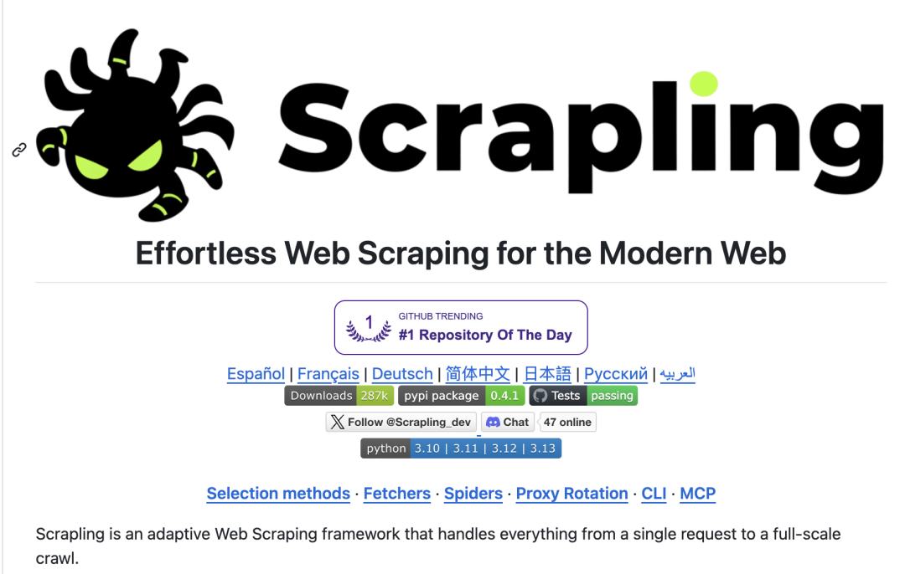
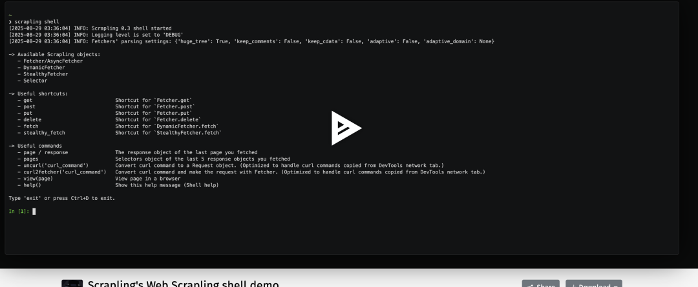

做 AI Agent 的人，迟早会遇到一个问题。
AI 很聪明，但它什么都看不见。
它不会主动打开网站，也不会自己抓数据。
绝大多数 Agent 的信息来源只有三种：
1 搜索 API
2 手动输入
3 固定数据源
而互联网真正有价值的数据，大多数都没有 API。
产品信息
论坛讨论
技术文档
新闻内容
行业报告
这些数据只存在于网页里。
所以 AI Agent 最大的能力瓶颈，其实不是模型，而是数据入口。
最近我给 OpenClaw 加了一个 Skill，这个问题基本解决了。
AI 现在可以：
自己打开网站
抓取网页
解析数据
生成分析
甚至可以绕过 Cloudflare 等反爬机制。
核心组件只有一个：
Scrapling。

一、Scrapling 是什么
Scrapling 是一个专门为现代反爬环境设计的 Python 爬虫框架。
它解决了传统爬虫三个最头疼的问题：
1 网站改版导致选择器失效
2 Cloudflare 等反爬机制
3 动态页面抓取困难
很多爬虫项目需要组合：
requests
playwright
selenium
beautifulsoup
Scrapling 直接做成了一套统一能力。

核心设计很简单：
把爬虫分成三层能力。
二、三种抓取模式
Scrapling 内置三种 Fetcher。
1 普通抓取
适合普通网页。
from scrapling.fetchers import Fetcher
page = Fetcher.fetch("https://example.com")
title = page.css("title::text")
print(title)语法和 parsel、scrapy 非常接近。
2 动态页面抓取
针对 JS 渲染的网站。
from scrapling.fetchers import DynamicFetcher
page = DynamicFetcher.fetch(
"https://example.com",
headless=True
)本质是浏览器驱动。
但已经封装好了。
3 反反爬抓取
这是 Scrapling 最强的能力。
from scrapling.fetchers import StealthyFetcher
page = StealthyFetcher.fetch(
"https://example.com",
headless=True
)这个模式会自动：
伪装浏览器
模拟真实 TLS 指纹
绕过部分 Cloudflare 防护
三、爬虫最大痛点：网站改版
很多爬虫项目死于同一个问题：
网站改版。
HTML 一改，选择器全部失效。
Scrapling 提供了一个很有意思的功能：
Adaptive Parsing
简单理解就是：
记录元素特征
当 DOM 变化时重新匹配
示例：
products = page.css(".product", auto_save=True)下次网站改版以后：
products = page.css(".product", adaptive=True)Scrapling 会根据历史特征重新定位元素。
这对长期运行的爬虫非常重要。
四、把 Scrapling 变成 OpenClaw Skill
重点来了。
如果把 Scrapling 做成 Skill 接入 OpenClaw。
AI 就拥有了一个能力：
抓取任意网页。
实现其实很简单。
第一步：写 Skill
创建一个 Python Skill。
# skills/web_scraper.py
from scrapling.fetchers import StealthyFetcher
def scrape_web(url: str):
page = StealthyFetcher.fetch(
url,
headless=True
)
return page.text第二步：注册 Skill
在 OpenClaw 的 skill 配置中加入：
{
"scrape_web": {
"description": "抓取网页内容",
"parameters": {
"url": "string"
}
}
}第三步：AI 自动调用
用户提问：
'分析这个网站的产品信息'
OpenClaw 的执行流程会变成：
1 AI 判断需要网页数据
2 自动调用 scrape_web
3 抓取网页
4 提取内容
5 返回分析结果
整个过程完全自动。
五、真正的玩法
有了这个 Skill，OpenClaw 可以做很多事情。
例如：
自动市场调研
AI 自动抓取：
竞争产品网站
论坛讨论
用户评论
然后生成分析报告。
或者做技术情报系统。
AI 定时抓取：
GitHub
技术博客
行业新闻
自动生成周报。
甚至可以做一个：
AI 情报机器人。
六、一个被很多人忽视的事实
AI Agent 的核心能力，其实只有两个：
获取信息
处理信息
LLM 已经解决了第二个问题。
Scrapling 解决的是第一个问题。
当 Scrapling 接入 OpenClaw。
AI 就拥有了一个新的能力：
自己去互联网找答案。
七、一句话总结
以前的 AI Agent 是：
'我来回答你。'
现在的 AI Agent 是：
'我去帮你查。'
如果继续往下做，其实还有一个更强的版本：
OpenClaw + Scrapling + RAG
可以实现：
自动抓取网站
自动入库
自动向量化
自动知识问答
也就是：
一个真正会自己学习的 AI Agent。